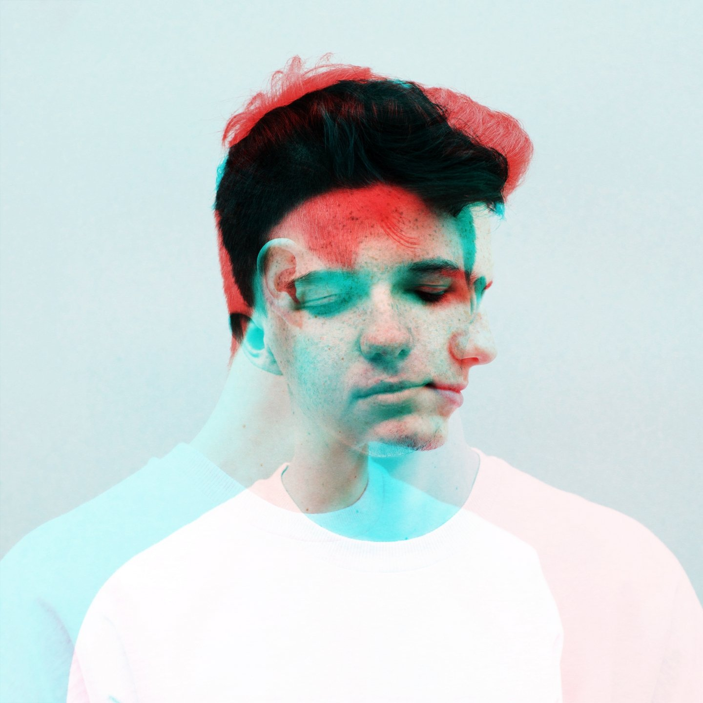

PETIT BISCUIT

Mehdi Benjelloun (born 10 November 1999) known by his stage name
Petit Biscuit, is a French DJ and music producer.
The 20-year-old French producer has been taking the world by storm
with his signature sound, forged through combining acoustic
elements, innovative electronic production, and his trademark
vocal manipulations. The eclecticism of this combination is
reflective of his background in the polar spheres of electronica
and classical music.
He has been touring the world including a performance at Coachella
in 2018.